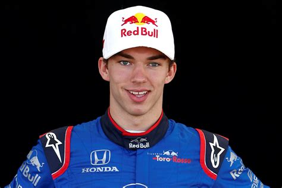

Piloto: Pierre Gasly
Datos personales
Dorsal: 10 (su número de carrera)
Fecha de nacimiento: 7 de febrero de 1996
Lugar de nacimiento: Rouen, Francia
Lugar de residencia: Milán, Italia
Equipo actual: Alpine
Estadísticas de carrera: 1 victoria, 3 podios, 1 pole, 1 vuelta rápida, +100 carreras disputadas.
Presentación
Pierre Gasly es un talentoso piloto de Fórmula 1 nacido el 7 de febrero de 1996 en Rouen, Francia. Actualmente compite para el Alpine F1 Team, con el número 10. Con una carrera que despegó en las categorías inferiores, Gasly se destacó en la Eurocopa de Fórmula Renault y la GP2 Series, donde se consagró campeón en 2016.
Gasly hizo su debut en la Fórmula 1 en 2017 con Toro Rosso y tuvo una breve etapa en Red Bull Racing en 2019. Su momento culminante llegó en 2020, cuando se alzó con su primera victoria en el Gran Premio de Italia en Monza, convirtiéndose en el primer piloto francés en ganar una carrera de F1 en más de dos décadas. Es reconocido por su velocidad y habilidades de gestión de neumáticos.
Aficiones
Equipos para los que ha competido
- Toro Rosso / AlphaTauri
- Red Bull Racing
- Alpine
Conceptos relacionados con la Fórmula 1
- Pit stop:
- Detención breve del coche en la pista para cambiar neumáticos o realizar reparaciones.
- Pole:
- Posición de salida más alta en la parrilla, obtenida en la sesión de clasificación.
- Rake:
- Ángulo de inclinación del coche, que puede afectar la aerodinámica.
- Efecto suelo:
- Principio aerodinámico que permite a los coches generar carga adicional al acercarse a la pista.
- DRS (Drag Reduction System)
- Sistema que permite reducir la resistencia aerodinámica en ciertas condiciones para facilitar los adelantamientos.
Resultados destacados de Pierre Gasly en los últimos 3 años
- 2021
- Gran Premio de Azerbaiyán (2º lugar)
- Gran Premio de Francia (3º lugar)
- Gran Premio de Italia (2º lugar)
- 2022
- Gran Premio de los Países Bajos (3º lugar)
- Gran Premio de Francia (5º lugar)
- 2023
- Gran Premio de Mónaco (3º lugar)
- Gran Premio de España (4º lugar)
- Gran Premio de Canadá (5º lugar)
Resultados de Pierre Gasly en la temporada 2023
| Resultados | Valor |
|---|---|
| Puntos obtenidos | 62 |
| Posición | 11º |
| Poles | 0 |
| Victorias | 0 |
| Podios | 1 |